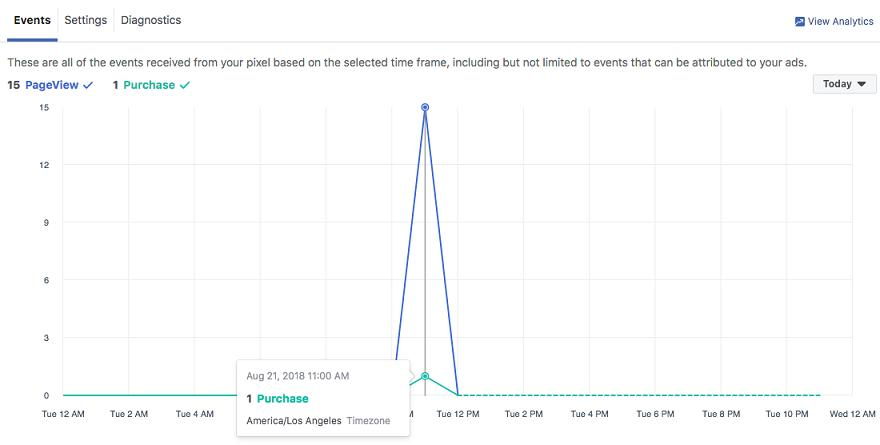

Facebook is a really amazing tool that goes well above and beyond a social media platform. There are all sorts of highly useful applications within the site itself that can make a big difference to your life, particularly if you are harnessing Facebook for business. A lot of the benefits of Facebook are pretty obvious and well-advertised to the public.
Being able to make pages specifically designed for your business or even Facebook’s highly targeted advertising and marketing tools have been around long enough that people have really gotten very familiar with how to go about using them and why they are so useful. Last year however, Facebook released an Analytics tool that has gone somewhat under the radar.
People do use it, of course, but Facebook itself didn’t make a big song and dance out of it at the time, so there isn’t a sense in which it has been adopted ubiquitously. And, the strange thing about this is, it’s an amazing resource that can be incredibly influential over how you use Facebook. So, without further ado let’s take a look at Facebook Analytics and how you can go about using it to get yourself the best possible results.
The Mobile Journey
Mobile is incredibly important in digital business and marketing. Statistics show that 79% of smartphone users have done digital business, making some sort of purchase from their smartphone, in the last 6 months. Mobile being a key battlefield in the digital marketing war is no surprise, with the immense amount of traffic that comes from mobile users daily.
Facebook’s Analytics tool, and advertising suite, not only cater for mobile users but allow for the increasing demand for companies to be able to work on the move by providing a mobile app from which you can monitor your ads and page progress. Analytics on the go is a really great tool, especially given the speed at which things develop in online business. You will definitely want to be downloading the Analytics app to make the most out of what Facebook can offer to you.
Helping To Build Your Audience
Building an audience on Facebook is easy and difficult. On the one hand, there’s something so intuitive about Facebook for engaging with other people. As a social media platform, it’s built on an ethos of non-threatening connectivity between people and pages that might otherwise have nothing to do with one another. Facebook is in many ways the ultimate online marketing tool. The interesting thing about actually building an audience on Facebook that will be helpful for your company, is that it’s very much more complex than all of these positives seem.
You can easily attract people to your page on Facebook, and get people to look at what you have to offer, but the actual act of trying to create a helpful audience for your business is hard. This is where analytics comes in. Analytics gives you so much information to work with as you develop your demographic targeting. Getting people to like your page is one thing; getting the right people too is what Analytics will help you with. Its detailed response to audience shifts also gives you lots of data that you can use to craft your engagements and your content to keep fostering a fertile community for achieving your goals around you.
Using Facebook Pixel For Conversion Rates

Facebook Pixel is a part of the Facebook marketing and analytics suite that gives you a further tool for ensuring your company’s success in its Facebook usage. Pixel is actually just a piece of code that essentially serves as a further way to track activity and monitor the impact of your Facebook activity. Needless to say, it can be very useful. However, what it is most effective at doing is tracking who converts out of Facebook and through to your primary marketplace.
Facebook itself is such a rich and interesting tool for business, but it’s definitely not the end goal for your company’s marketing flow. Ultimately, a departure away from Facebook is going to be critical for whatever sales you are hoping to make. Knowing how effectively your Facebook is set up for this ‘conversion’ is going to be an important factor for your audience building as well as your overall understanding of your Facebook marketing value.
Facebook Pixel, the aforementioned code, will get placed on the landing page for your website, where you will then be able to find out data about how much of your business comes from your Facebook page but also what the people who come from Facebook then do, in comparison to what the people who arrive through other means end up doing. All of this is very useful for getting a much more finely chiseled image of your customers.

Using The Funnels
One of the most intriguing elements to your Analytics capabilities on Facebook is the use of ‘Funnels’. You need to actively set Funnels up, when you arrive in your analytics menu, and create them manually. But once set-up they are a wonderfully easy to understand way of visualizing the ‘user journey’ an element to marketing that is so, so important.
Funnels are a bit like Russian dolls, on a horizontal axis: you start with maybe everyone who shared your latest post, then of that section the subsection who visited your page, then of that who viewed your website and of that who made a purchase. Funnels are pretty fun to play around with and they offer you a really interesting alternative way o understand the movements of your audience. Sometimes you’ll identify a blockage to clear, other times a campaign that was particularly successful.
Conclusion
Overall, there’s a wonderful amount that you can achieve with the Facebook Analytics tool. It’s definitely one that you should be using more and more and that, when combined with good Facebook marketing practice, could be instrumental in creating a sustainable and flexible method for getting business.
About the author
Ashley Halsey is a professional technology writer, working at LuckyAssignments and GumEssays writing on all sorts of topics relating to the digital marketing strategy. She spends most of her spare time travelling with her family and gathering information for her latest piece of writing.
Alexia says
Hi Ashley! Facebook Pixel definitely a must have today. Since I’m Facebook ads, It helped me a lot to gain more sales online. Using Facebook Pixel I was able to reach more people that are willing to make a purchase on my web shop. Tnx for the insights.
Tedd says
Facebook analytics is must have of course, but the main thing is to know how to read those reports and charts. It’s powerful tool but it requires deeper, so to say, individual analysis and existing knowledge base in the background and of course the usage of some kind of a try-failure method.
Antoni says
For a long time I tried to ignore the important of Facebook analytics for my small business, since it seems like there is a lot of things to learn. But finally I decided it’s time to move forward and take advantage of it. Thank you for sharing.
Susie Lopez says
Before we added products could be suitable for younger people, most of our sales was coming from desktop devices. There was an amazing jump in sales coming from mobile devices when we added these new products. We expected this though, but it just proved what we see every day in real life. 🙂
Ilma says
Pixel is a great thing. Every moment You know who was there, what he was doing, and their habits. What potential clients search for, what they are interested in, wherefrom they are coming.
Larry says
It’s great to know, from the seller aspect, that Facebook offers that great tool. When You combine all Facebook tools there is no way to make a failure, but of course, nothing’s for free.
vio says
great article! I didn’t know we can get so much information from facebook analytics. It seemed hard to navigate at first. This article has helped me understand how it works better.
Elaina M says
Glad it helped 🙂